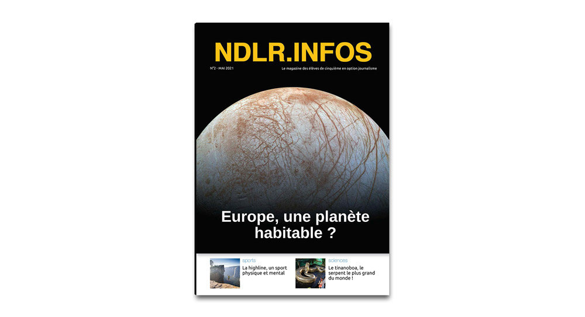

Le N°2 du NDLR.infos est publié
01 juin 2021
Les élèves de 5e en option journalisme sortent leur deuxième numéro de NDLR.infos !
Plusieurs sujets sont abordés : le sport, les sciences, l'écologie, les sujets de sociétés, les animaux... Tout autant de sujets que les élèves ont pu développer dans ce journal.
Pour ce numéro, les élèves ont travaillé en autonomie. Les sujets ont été validés par les professeurs et les élèves ont ensuite fait les recherches, la rédaction et la mise en page.
Nous tenons à féliciter nos jeunes journalistes pour le travail fourni en très grande autonomie !
Nous vous souhaitons bonne lecture 🗞️
Lire le NDLR.infos N°2
Édito
" Un travail en autonomie
Pour ce numéro 2, les apprentis journalistes ont travaillé seuls ! Le professeur documentaliste et moi-même n'avons fait que valider le choix de leur sujet et corriger les erreurs d'orthographe et de mise en page.
Cette petite équipe est animée par des intérêts très variés : l'espace, les planètes et leurs mystères, les sports de l'extrême, les records du monde insolites et amusants, les animaux : antiques aux formes effrayantes ou les souffrances actuelles qu'ils subissent. Et enfin des sujets de société tels que les règles, dont on n'ose pas parler alors qu'elles concernent la moitié des êtres humains et les gestes écologiques : chacun peut agir avec son téléphone mobile. Enfin, avant l'été, la découverte d'une destination qui fait rêver :les îles Maldives !Nous espérons que ce N°2 de NDLR.infos vous apprendra beaucoup et suscitera votre curiosité.
Bonne lecture !
CP"
NDLR.infos N°2 Nos autres Actus
Découvrir Notre Dame La Riche...

L'institution
Ancrée au centre de la ville de Tours, l’Institution Notre-Dame La Riche œuvre depuis des décennies à l’épanouissement des jeunes de la maternelle à l’enseignement supérieur...

Internat
Un cadre de vie et de travail en plein coeur de la ville de Tours dans lequel est privilégié l'apprentissage à l'autonomie et le vivre ensemble...

Une école hôtelière
L’école hôtelière de Notre Dame La Riche forme les étudiants, avec l'appui d'un restaurant pédagogique, dans trois filières de l’hôtellerie et de la restauration : la cuisine, le service et l’hébergement…